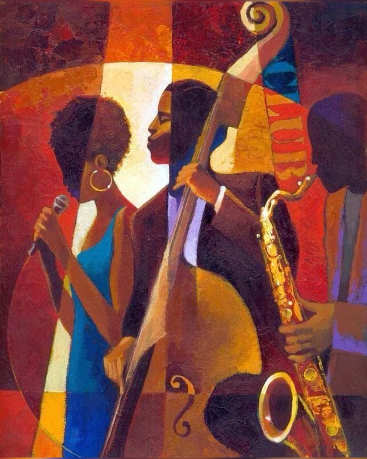

The Harmony Between Steel Pan and Code
October 1, 2024 by Shenelle Turner
Maturity has made me appreciate the nuances of the steel pan, and as such, I find it rather easy to draw comparisons between the artistic facets of playing an instrument and the technical aspect of writing codes. For example, the art of playing the steel pan involves more than just striking the grooves, but applying rhythm in a manner that allows for the production of synchronized beats. Coding also demands the same degree of discipline in the construction of the systems. This is all very relatable to me within music – the attention to detail, the timing and the creativity are what I always find very interesting in programming. Sometimes, in the course of indulging in a web development project, I oftentimes maneuver the code like a piece of a symphony orchestra, in which every line of code is a finely placed note composing a harmony that ties the project together, much like how every note is crucial to the melody of the song.
There is one downside to this musicality that I feel it benefits coding, and that is web development. Just like I group notes together to create chords, I am using elements to build a complete site using CSS or JavaScript. I strongly believe that the thinking that one must engage in when they are dealing with music helps and enhances creativity, the pulse of how the problem is solved, even to the minutest works such as that of debugging. These do not appear to be tasks, rather they are aspects of improvement of the performance. It is a strange combination, but I must say that programing steel pan taught me a lot about being a developer in the intuitive sense.